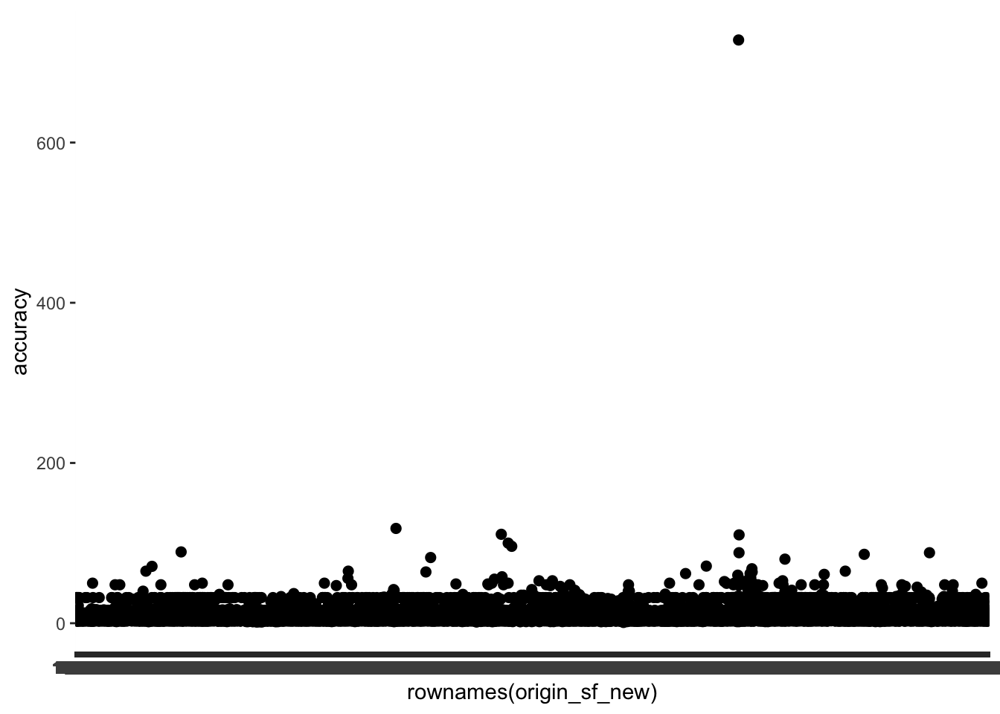

Show code
pacman::p_load(arrow, lubridate, sf, tidyverse, spNetwork, tmap,
classInt, viridis, spatstat, raster)We will be applying appropriate spatial point patterns analysis methods learned in class to discover the geographical and spatio-temporal distribution of Grab hailing services locations in Singapore.
The R packages that we will be using in this exercise are as follows:
arrow: For reading parquet files (Grab-Posisi Dataset)
lubridate: To handle the date formatting
sf: Import, manage and process vector-based geospatial data in R.
tidyverse: a collection of packages for data science tasks
spatstat: Wide range of useful functions for point pattern analysis and derive kernel density estimation (KDE) layer.
spNetwork
tmap: Provides functions for plotting cartographic quality static point patterns maps or interactive maps by using leaflet API.
classInt
viridis
raster
pacman::p_load(arrow, lubridate, sf, tidyverse, spNetwork, tmap,
classInt, viridis, spatstat, raster)The datasets that we will be using are as follow:
Using read_parquet() function from arrow package to import the grab data, then changing pingtimestamp column to datetime object
grab_df <- read_parquet("data/aspatial/part-00000.snappy.parquet")
grab_df$pingtimestamp <- as_datetime(grab_df$pingtimestamp)Transforming the coordinate system at the same time when we are importing the data
sg_road <- st_read(dsn = "data/geospatial", layer = "gis_osm_roads_free_1") %>% st_transform(crs = 3414)Reading layer `gis_osm_roads_free_1' from data source
`C:\Sashimii0219\IS415-GAA\Take-home_Ex\Take-home_Ex01\data\geospatial'
using driver `ESRI Shapefile'
Simple feature collection with 1759836 features and 10 fields
Geometry type: LINESTRING
Dimension: XY
Bounding box: xmin: 99.66041 ymin: 0.8021131 xmax: 119.2601 ymax: 7.514393
Geodetic CRS: WGS 84Transforming the coordinate system at the same time when we are importing the data
mpsz2019 <- st_read("data/geospatial", layer = "MPSZ-2019") %>% st_transform(crs = 3414)Reading layer `MPSZ-2019' from data source
`C:\Sashimii0219\IS415-GAA\Take-home_Ex\Take-home_Ex01\data\geospatial'
using driver `ESRI Shapefile'
Simple feature collection with 332 features and 6 fields
Geometry type: MULTIPOLYGON
Dimension: XY
Bounding box: xmin: 103.6057 ymin: 1.158699 xmax: 104.0885 ymax: 1.470775
Geodetic CRS: WGS 84Before we begin exploring the data, we will first need to perform some data pre-processing on the datasets that we have imported.
As grab won’t be able to reach offshore places, we will exclude the outer islands from this dataset. We will do this through the following steps:
We will first take a look at the unique planning areas in Singapore using unique() on the PLN_AREA_N column of mpsz2019 dataset.
unique(mpsz2019$PLN_AREA_N) [1] "MARINA EAST" "RIVER VALLEY"
[3] "SINGAPORE RIVER" "WESTERN ISLANDS"
[5] "MUSEUM" "MARINE PARADE"
[7] "SOUTHERN ISLANDS" "BUKIT MERAH"
[9] "DOWNTOWN CORE" "STRAITS VIEW"
[11] "QUEENSTOWN" "OUTRAM"
[13] "MARINA SOUTH" "ROCHOR"
[15] "KALLANG" "TANGLIN"
[17] "NEWTON" "CLEMENTI"
[19] "BEDOK" "PIONEER"
[21] "JURONG EAST" "ORCHARD"
[23] "GEYLANG" "BOON LAY"
[25] "BUKIT TIMAH" "NOVENA"
[27] "TOA PAYOH" "TUAS"
[29] "JURONG WEST" "SERANGOON"
[31] "BISHAN" "TAMPINES"
[33] "BUKIT BATOK" "HOUGANG"
[35] "CHANGI BAY" "PAYA LEBAR"
[37] "ANG MO KIO" "PASIR RIS"
[39] "BUKIT PANJANG" "TENGAH"
[41] "SELETAR" "SUNGEI KADUT"
[43] "YISHUN" "MANDAI"
[45] "PUNGGOL" "CHOA CHU KANG"
[47] "SENGKANG" "CHANGI"
[49] "CENTRAL WATER CATCHMENT" "SEMBAWANG"
[51] "WESTERN WATER CATCHMENT" "WOODLANDS"
[53] "NORTH-EASTERN ISLANDS" "SIMPANG"
[55] "LIM CHU KANG" plot(mpsz2019)
Note that there are 3 areas with island in their name, mainly “NORTH-EASTERN ISLANDS”, “SOUTHERN ISLANDS”, and “WESTERN ISLANDS”.
To exclude the islands, we simply have to pass a condition to exclude these islands in the subset function.
mpsz2019_new <- subset(mpsz2019, !(PLN_AREA_N %in%
c("NORTH-EASTERN ISLANDS", "SOUTHERN ISLANDS", "WESTERN ISLANDS")))Great! Now let’s check if we indeed removed the maps!
tmap_mode('plot')
before <- tm_shape(mpsz2019) +
tm_polygons("PLN_AREA_N") +
tmap_options(max.categories = 53)
after <- tm_shape(mpsz2019_new) +
tm_polygons("PLN_AREA_N") +
tmap_options(max.categories = 53)
tmap_arrange(before, after)
We will be using the st_is_valid() function to test for invalid geometries.
test <- st_is_valid(mpsz2019_new,reason=TRUE)
# Number of invalid geometries
length(which(test!= "Valid Geometry"))[1] 3# Reason
test[which(test!= "Valid Geometry")][1] "Ring Self-intersection[26922.6162000542 27033.332999988]"
[2] "Ring Self-intersection[38991.2589000446 31986.5599999869]"
[3] "Ring Self-intersection[15432.4749999835 31319.7159999867]"We can see that there are 3 invalid geometries. Let’s fix them using st_make_valid().
mpsz2019_new<- st_make_valid(mpsz2019_new)
length(which(st_is_valid(mpsz2019_new) == FALSE))[1] 0mpsz2019_new[rowSums(is.na(mpsz2019_new))!=0,]Simple feature collection with 0 features and 6 fields
Bounding box: xmin: NA ymin: NA xmax: NA ymax: NA
Projected CRS: SVY21 / Singapore TM
[1] SUBZONE_N SUBZONE_C PLN_AREA_N PLN_AREA_C REGION_N REGION_C geometry
<0 rows> (or 0-length row.names)Using the code above, we can see that there are no missing values.
As the dataset contains data from Malaysia and Brunei as well, we will use st_intersection() to limit the data to only Singapore.
points_within_sg <- st_intersection(sg_road, mpsz2019)Now, we can see that in points_within_sg it only contain Singapore road data, combined with the other values from mpsz2019 like “PLN_AREA_N” used above.
colnames(points_within_sg) [1] "osm_id" "code" "fclass" "name" "ref"
[6] "oneway" "maxspeed" "layer" "bridge" "tunnel"
[11] "SUBZONE_N" "SUBZONE_C" "PLN_AREA_N" "PLN_AREA_C" "REGION_N"
[16] "REGION_C" "geometry" head(points_within_sg)Simple feature collection with 6 features and 16 fields
Geometry type: LINESTRING
Dimension: XY
Bounding box: xmin: 31466.72 ymin: 30680.54 xmax: 32815.21 ymax: 30873.74
Projected CRS: SVY21 / Singapore TM
osm_id code fclass name ref oneway maxspeed layer
4052 23946437 5122 residential Rhu Cross <NA> F 50 0
9668 32605139 5131 motorway_link <NA> <NA> F 40 0
20076 46337834 5131 motorway_link <NA> <NA> F 50 -2
21690 49961799 5111 motorway East Coast Parkway ECP F 70 1
26543 74722808 5111 motorway East Coast Parkway ECP F 70 1
29808 99007260 5131 motorway_link <NA> <NA> F 50 1
bridge tunnel SUBZONE_N SUBZONE_C PLN_AREA_N PLN_AREA_C REGION_N
4052 F F MARINA EAST MESZ01 MARINA EAST ME CENTRAL REGION
9668 F F MARINA EAST MESZ01 MARINA EAST ME CENTRAL REGION
20076 F T MARINA EAST MESZ01 MARINA EAST ME CENTRAL REGION
21690 F F MARINA EAST MESZ01 MARINA EAST ME CENTRAL REGION
26543 T F MARINA EAST MESZ01 MARINA EAST ME CENTRAL REGION
29808 T F MARINA EAST MESZ01 MARINA EAST ME CENTRAL REGION
REGION_C geometry
4052 CR LINESTRING (31889.45 30760....
9668 CR LINESTRING (32768.57 30857....
20076 CR LINESTRING (32815.21 30873....
21690 CR LINESTRING (32365.45 30845....
26543 CR LINESTRING (31611.63 30720....
29808 CR LINESTRING (31611.63 30720....Again, using the st_is_valid() function to test for invalid geometries.
test <- st_is_valid(points_within_sg,reason=TRUE)
# Number of invalid geometries
length(which(test!= "Valid Geometry"))[1] 0# Reason
test[which(test!= "Valid Geometry")]character(0)No invalid geometries!
points_within_sgSimple feature collection with 241743 features and 16 fields
Geometry type: GEOMETRY
Dimension: XY
Bounding box: xmin: 2679.373 ymin: 15901.59 xmax: 56022.44 ymax: 50220.06
Projected CRS: SVY21 / Singapore TM
First 10 features:
osm_id code fclass name ref oneway
4052 23946437 5122 residential Rhu Cross <NA> F
9668 32605139 5131 motorway_link <NA> <NA> F
20076 46337834 5131 motorway_link <NA> <NA> F
21690 49961799 5111 motorway East Coast Parkway ECP F
26543 74722808 5111 motorway East Coast Parkway ECP F
29808 99007260 5131 motorway_link <NA> <NA> F
32774 116796554 5111 motorway Marina Coastal Expressway MCE F
32776 116796563 5111 motorway Marina Coastal Expressway MCE F
34199 122067627 5111 motorway East Coast Parkway ECP F
39013 131384443 5111 motorway Marina Coastal Expressway MCE F
maxspeed layer bridge tunnel SUBZONE_N SUBZONE_C PLN_AREA_N PLN_AREA_C
4052 50 0 F F MARINA EAST MESZ01 MARINA EAST ME
9668 40 0 F F MARINA EAST MESZ01 MARINA EAST ME
20076 50 -2 F T MARINA EAST MESZ01 MARINA EAST ME
21690 70 1 F F MARINA EAST MESZ01 MARINA EAST ME
26543 70 1 T F MARINA EAST MESZ01 MARINA EAST ME
29808 50 1 T F MARINA EAST MESZ01 MARINA EAST ME
32774 80 -2 F T MARINA EAST MESZ01 MARINA EAST ME
32776 80 -2 F T MARINA EAST MESZ01 MARINA EAST ME
34199 70 1 T F MARINA EAST MESZ01 MARINA EAST ME
39013 80 -2 F T MARINA EAST MESZ01 MARINA EAST ME
REGION_N REGION_C geometry
4052 CENTRAL REGION CR LINESTRING (31889.45 30760....
9668 CENTRAL REGION CR LINESTRING (32768.57 30857....
20076 CENTRAL REGION CR LINESTRING (32815.21 30873....
21690 CENTRAL REGION CR LINESTRING (32365.45 30845....
26543 CENTRAL REGION CR LINESTRING (31611.63 30720....
29808 CENTRAL REGION CR LINESTRING (31611.63 30720....
32774 CENTRAL REGION CR LINESTRING (32760.29 30815....
32776 CENTRAL REGION CR LINESTRING (32896.4 29458.3...
34199 CENTRAL REGION CR LINESTRING (31465.24 30707....
39013 CENTRAL REGION CR LINESTRING (32876.69 29480....points_within_sg[rowSums(is.na(points_within_sg))!=0,]Simple feature collection with 239810 features and 16 fields
Geometry type: GEOMETRY
Dimension: XY
Bounding box: xmin: 2679.373 ymin: 15901.59 xmax: 56022.44 ymax: 50220.06
Projected CRS: SVY21 / Singapore TM
First 10 features:
osm_id code fclass name ref oneway maxspeed layer
4052 23946437 5122 residential Rhu Cross <NA> F 50 0
9668 32605139 5131 motorway_link <NA> <NA> F 40 0
20076 46337834 5131 motorway_link <NA> <NA> F 50 -2
29808 99007260 5131 motorway_link <NA> <NA> F 50 1
45723 140562813 5131 motorway_link <NA> <NA> F 70 -1
45728 140562819 5131 motorway_link <NA> <NA> F 50 0
45731 140562823 5131 motorway_link <NA> <NA> F 60 -2
45733 140562826 5131 motorway_link <NA> <NA> F 40 0
52966 150819034 5141 service Bay East Drive <NA> B 0 0
84664 174717984 5153 footway <NA> <NA> B 0 0
bridge tunnel SUBZONE_N SUBZONE_C PLN_AREA_N PLN_AREA_C REGION_N
4052 F F MARINA EAST MESZ01 MARINA EAST ME CENTRAL REGION
9668 F F MARINA EAST MESZ01 MARINA EAST ME CENTRAL REGION
20076 F T MARINA EAST MESZ01 MARINA EAST ME CENTRAL REGION
29808 T F MARINA EAST MESZ01 MARINA EAST ME CENTRAL REGION
45723 F F MARINA EAST MESZ01 MARINA EAST ME CENTRAL REGION
45728 F F MARINA EAST MESZ01 MARINA EAST ME CENTRAL REGION
45731 F T MARINA EAST MESZ01 MARINA EAST ME CENTRAL REGION
45733 F F MARINA EAST MESZ01 MARINA EAST ME CENTRAL REGION
52966 F F MARINA EAST MESZ01 MARINA EAST ME CENTRAL REGION
84664 F F MARINA EAST MESZ01 MARINA EAST ME CENTRAL REGION
REGION_C geometry
4052 CR LINESTRING (31889.45 30760....
9668 CR LINESTRING (32768.57 30857....
20076 CR LINESTRING (32815.21 30873....
29808 CR LINESTRING (31611.63 30720....
45723 CR LINESTRING (32782.42 30754....
45728 CR LINESTRING (32645.37 30683....
45731 CR LINESTRING (32809.68 30108....
45733 CR LINESTRING (32609.11 30700....
52966 CR LINESTRING (32173.46 30036....
84664 CR LINESTRING (31750.06 30644....origin_df <- grab_df %>%
group_by(trj_id) %>%
arrange(pingtimestamp) %>%
filter(row_number()==1) %>%
mutate(weekday = wday(pingtimestamp,
label=TRUE,
abbr=TRUE),
start_hr = factor(hour(pingtimestamp)),
day = factor(mday(pingtimestamp)))origin_sf <- st_as_sf(origin_df,
coords = c("rawlng", "rawlat"),
crs=4326) %>%
st_transform(crs = 3414)sg_boundary <- mpsz2019_new %>% st_union()
plot(sg_boundary)
points_within_sg[points_within_sg$"SUBZONE_N" == "MARINA EAST", ]Simple feature collection with 209 features and 16 fields
Geometry type: GEOMETRY
Dimension: XY
Bounding box: xmin: 31465.24 ymin: 29262.88 xmax: 33026.78 ymax: 30873.74
Projected CRS: SVY21 / Singapore TM
First 10 features:
osm_id code fclass name ref oneway
4052 23946437 5122 residential Rhu Cross <NA> F
9668 32605139 5131 motorway_link <NA> <NA> F
20076 46337834 5131 motorway_link <NA> <NA> F
21690 49961799 5111 motorway East Coast Parkway ECP F
26543 74722808 5111 motorway East Coast Parkway ECP F
29808 99007260 5131 motorway_link <NA> <NA> F
32774 116796554 5111 motorway Marina Coastal Expressway MCE F
32776 116796563 5111 motorway Marina Coastal Expressway MCE F
34199 122067627 5111 motorway East Coast Parkway ECP F
39013 131384443 5111 motorway Marina Coastal Expressway MCE F
maxspeed layer bridge tunnel SUBZONE_N SUBZONE_C PLN_AREA_N PLN_AREA_C
4052 50 0 F F MARINA EAST MESZ01 MARINA EAST ME
9668 40 0 F F MARINA EAST MESZ01 MARINA EAST ME
20076 50 -2 F T MARINA EAST MESZ01 MARINA EAST ME
21690 70 1 F F MARINA EAST MESZ01 MARINA EAST ME
26543 70 1 T F MARINA EAST MESZ01 MARINA EAST ME
29808 50 1 T F MARINA EAST MESZ01 MARINA EAST ME
32774 80 -2 F T MARINA EAST MESZ01 MARINA EAST ME
32776 80 -2 F T MARINA EAST MESZ01 MARINA EAST ME
34199 70 1 T F MARINA EAST MESZ01 MARINA EAST ME
39013 80 -2 F T MARINA EAST MESZ01 MARINA EAST ME
REGION_N REGION_C geometry
4052 CENTRAL REGION CR LINESTRING (31889.45 30760....
9668 CENTRAL REGION CR LINESTRING (32768.57 30857....
20076 CENTRAL REGION CR LINESTRING (32815.21 30873....
21690 CENTRAL REGION CR LINESTRING (32365.45 30845....
26543 CENTRAL REGION CR LINESTRING (31611.63 30720....
29808 CENTRAL REGION CR LINESTRING (31611.63 30720....
32774 CENTRAL REGION CR LINESTRING (32760.29 30815....
32776 CENTRAL REGION CR LINESTRING (32896.4 29458.3...
34199 CENTRAL REGION CR LINESTRING (31465.24 30707....
39013 CENTRAL REGION CR LINESTRING (32876.69 29480....subzones <- unique(points_within_sg$"SUBZONE_N")
subzones [1] "MARINA EAST" "INSTITUTION HILL"
[3] "ROBERTSON QUAY" "JURONG ISLAND AND BUKOM"
[5] "FORT CANNING" "MARINA EAST (MP)"
[7] "SUDONG" "SEMAKAU"
[9] "SOUTHERN GROUP" "SENTOSA"
[11] "CITY TERMINALS" "ANSON"
[13] "STRAITS VIEW" "MARITIME SQUARE"
[15] "TELOK BLANGAH RISE" "TANJONG PAGAR"
[17] "EVERTON PARK" "TELOK BLANGAH WAY"
[19] "MAXWELL" "CECIL"
[21] "KAMPONG TIONG BAHRU" "TELOK BLANGAH DRIVE"
[23] "PASIR PANJANG 2" "CENTRAL SUBZONE"
[25] "SINGAPORE GENERAL HOSPITAL" "DEPOT ROAD"
[27] "BUKIT MERAH" "CHINATOWN"
[29] "PHILLIP" "RAFFLES PLACE"
[31] "CHINA SQUARE" "TIONG BAHRU"
[33] "BAYFRONT SUBZONE" "TIONG BAHRU STATION"
[35] "CLIFFORD PIER" "MARINA SOUTH"
[37] "PEARL'S HILL" "BOAT QUAY"
[39] "HENDERSON HILL" "REDHILL"
[41] "ALEXANDRA HILL" "BUKIT HO SWEE"
[43] "CLARKE QUAY" "PASIR PANJANG 1"
[45] "QUEENSWAY" "KENT RIDGE"
[47] "ALEXANDRA NORTH" "TANGLIN HALT"
[49] "MACKENZIE" "SUNGEI ROAD"
[51] "ONE NORTH" "TANJONG RHU"
[53] "COMMONWEALTH" "DOVER"
[55] "RIDOUT" "CAIRNHILL"
[57] "CLEMENTI WEST" "MONK'S HILL"
[59] "SIGLAP" "CLEMENTI WOODS"
[61] "PIONEER SECTOR" "PENJURU CRESCENT"
[63] "ORANGE GROVE" "KAMPONG BUGIS"
[65] "KATONG" "BOULEVARD"
[67] "ISTANA NEGARA" "LITTLE INDIA"
[69] "GUL BASIN" "MARINA CENTRE"
[71] "BRAS BASAH" "OXLEY"
[73] "CITY HALL" "MEI CHIN"
[75] "LEONIE HILL" "PORT"
[77] "DHOBY GHAUT" "BUGIS"
[79] "VICTORIA" "PATERSON"
[81] "EAST COAST" "NATIONAL UNIVERSITY OF S'PORE"
[83] "ONE TREE HILL" "SOMERSET"
[85] "BENCOOLEN" "CHATSWORTH"
[87] "KAMPONG GLAM" "SELEGIE"
[89] "MOUNT EMILY" "ROCHOR CANAL"
[91] "NICOLL" "MARGARET DRIVE"
[93] "TANGLIN" "MARINE PARADE"
[95] "JOO KOON" "KALLANG WAY"
[97] "INTERNATIONAL BUSINESS PARK" "TUKANG"
[99] "CORONATION ROAD" "KEMBANGAN"
[101] "DUNEARN" "SUNSET WAY"
[103] "MACPHERSON" "KIM KEAT"
[105] "BEDOK NORTH" "TOA PAYOH CENTRAL"
[107] "JURONG GATEWAY" "HOLLAND ROAD"
[109] "KAMPONG UBI" "SENNETT"
[111] "POTONG PASIR" "TUAS NORTH"
[113] "PEI CHUN" "BOON TECK"
[115] "KIAN TECK" "SAFTI"
[117] "FARRER PARK" "NEWTON CIRCUS"
[119] "JURONG PORT" "SAMULUN"
[121] "SHIPYARD" "GHIM MOH"
[123] "LAVENDER" "GOODWOOD PARK"
[125] "PANDAN" "SINGAPORE POLYTECHNIC"
[127] "CLEMENTI CENTRAL" "KAMPONG JAVA"
[129] "BOON KENG" "KALLANG BAHRU"
[131] "ULU PANDAN" "FARRER COURT"
[133] "NASSIM" "WEST COAST"
[135] "BAYSHORE" "BENOI SECTOR"
[137] "GUL CIRCLE" "TYERSALL"
[139] "MOULMEIN" "LIU FANG"
[141] "FRANKEL" "CLEMENTI NORTH"
[143] "LEEDON PARK" "GEYLANG EAST"
[145] "TEBAN GARDENS" "JURONG RIVER"
[147] "GEYLANG BAHRU" "FABER"
[149] "MALCOLM" "BEDOK SOUTH"
[151] "BENDEMEER" "BALESTIER"
[153] "TUAS PROMENADE" "SERANGOON CENTRAL"
[155] "BISHAN EAST" "TAMPINES WEST"
[157] "BRICKWORKS" "DEFU INDUSTRIAL PARK"
[159] "CHANGI BAY" "PAYA LEBAR EAST"
[161] "HONG KAH NORTH" "KOVAN"
[163] "CHONG BOON" "SERANGOON GARDEN"
[165] "HOUGANG CENTRAL" "LOYANG EAST"
[167] "DAIRY FARM" "PASIR RIS DRIVE"
[169] "TAMPINES NORTH" "CHENG SAN"
[171] "ANG MO KIO TOWN CENTRE" "KEBUN BAHRU"
[173] "SERANGOON NORTH IND ESTATE" "TENGAH INDUSTRIAL ESTATE"
[175] "SERANGOON NORTH" "GUILIN"
[177] "WENYA" "NATURE RESERVE"
[179] "TAMPINES EAST" "LORONG AH SOO"
[181] "FLORA DRIVE" "HILLVIEW"
[183] "TOH TUCK" "MOUNT PLEASANT"
[185] "HILLCREST" "JOO SENG"
[187] "CHIN BEE" "LORONG 8 TOA PAYOH"
[189] "TOH GUAN" "BRADDELL"
[191] "BIDADARI" "WOODLEIGH"
[193] "TAMAN JURONG" "LAKESIDE (LEISURE)"
[195] "TOA PAYOH WEST" "KAKI BUKIT"
[197] "YUHUA EAST" "BUKIT BATOK SOUTH"
[199] "JURONG WEST CENTRAL" "BEDOK RESERVOIR"
[201] "ANAK BUKIT" "SWISS CLUB"
[203] "XILIN" "SIMEI"
[205] "BOON LAY PLACE" "BUKIT BATOK EAST"
[207] "BUKIT BATOK WEST" "BUKIT BATOK CENTRAL"
[209] "UPPER PAYA LEBAR" "TAI SENG"
[211] "TENGEH" "YUHUA WEST"
[213] "YUNNAN" "LORONG CHUAN"
[215] "HONG KAH" "SELETAR"
[217] "PANG SUA" "SELETAR AEROSPACE PARK"
[219] "KHATIB" "MANDAI WEST"
[221] "CONEY ISLAND" "YISHUN SOUTH"
[223] "LOWER SELETAR" "NORTHSHORE"
[225] "MANDAI ESTATE" "YISHUN CENTRAL"
[227] "PASIR RIS CENTRAL" "GOMBAK"
[229] "PAYA LEBAR NORTH" "HOUGANG EAST"
[231] "LORONG HALUS" "KANGKAR"
[233] "SEMBAWANG HILLS" "JELEBU"
[235] "KEAT HONG" "HOUGANG WEST"
[237] "PAYA LEBAR WEST" "BANGKIT"
[239] "LORONG HALUS NORTH" "PENG SIANG"
[241] "PASIR RIS WEST" "YIO CHU KANG WEST"
[243] "TRAFALGAR" "TECK WHYE"
[245] "CHOA CHU KANG CENTRAL" "FAJAR"
[247] "SENJA" "SAUJANA"
[249] "SELETAR HILLS" "COMPASSVALE"
[251] "YIO CHU KANG EAST" "YIO CHU KANG"
[253] "LOYANG WEST" "TAGORE"
[255] "PASIR RIS PARK" "CHOA CHU KANG NORTH"
[257] "RIVERVALE" "YIO CHU KANG NORTH"
[259] "CHANGI POINT" "SENGKANG TOWN CENTRE"
[261] "ANCHORVALE" "SENGKANG WEST"
[263] "FERNVALE" "PUNGGOL FIELD"
[265] "YEW TEE" "PASIR RIS WAFER FAB PARK"
[267] "MATILDA" "WATERWAY EAST"
[269] "GALI BATU" "SPRINGLEAF"
[271] "PUNGGOL TOWN CENTRE" "PUNGGOL CANAL"
[273] "CENTRAL WATER CATCHMENT" "SEMBAWANG STRAITS"
[275] "THE WHARVES" "SENOKO NORTH"
[277] "CRAWFORD" "TUAS BAY"
[279] "TUAS VIEW" "BAHAR"
[281] "CLEANTECH" "LAKESIDE (BUSINESS)"
[283] "PARK" "BRICKLAND"
[285] "FOREST HILL" "PLANTATION"
[287] "GARDEN" "AIRPORT ROAD"
[289] "CHANGI WEST" "HOLLAND DRIVE"
[291] "CHANGI AIRPORT" "PEOPLE'S PARK"
[293] "MOUNTBATTEN" "ALJUNIED"
[295] "PULAU PUNGGOL TIMOR" "TURF CLUB"
[297] "WOODLANDS SOUTH" "WOODGROVE"
[299] "YISHUN EAST" "MURAI"
[301] "PULAU PUNGGOL BARAT" "YISHUN WEST"
[303] "WOODLANDS REGIONAL CENTRE" "NORTH-EASTERN ISLANDS"
[305] "SIMPANG SOUTH" "NORTHLAND"
[307] "MIDVIEW" "WOODLANDS WEST"
[309] "SEMBAWANG SPRINGS" "KRANJI"
[311] "RESERVOIR VIEW" "WOODLANDS EAST"
[313] "SEMBAWANG CENTRAL" "GREENWOOD PARK"
[315] "SEMBAWANG EAST" "SENOKO WEST"
[317] "ADMIRALTY" "LIM CHU KANG"
[319] "SIMPANG NORTH" "SENOKO SOUTH"
[321] "SEMBAWANG NORTH" "TANJONG IRAU"
[323] "NORTH COAST" "PLAB"
[325] "MANDAI EAST" "NEE SOON"
[327] "UPPER THOMSON" "SHANGRI-LA"
[329] "TOWNSVILLE" "MARYMOUNT"
[331] "TUAS VIEW EXTENSION" plot(mpsz2019_new)
tp <- mpsz2019_new %>%
filter(PLN_AREA_N == "TAMPINES")
tm_shape(tp) + tm_polygons()
tm_shape(tp) +
tm_polygons()
tm_shape(origin_sf) +
tm_dots() +
tm_shape(points_within_sg[points_within_sg$"SUBZONE_N" == "TAMPINES EAST", ]) +
tm_lines()
origin_ppp <- as.ppp(origin_sf)
summary(origin_ppp)Marked planar point pattern: 28000 points
Average intensity 2.47621e-05 points per square unit
Coordinates are given to 3 decimal places
i.e. rounded to the nearest multiple of 0.001 units
marks are of type 'character'
Summary:
Length Class Mode
28000 character character
Window: rectangle = [3661.47, 49845.23] x [25201.14, 49685.08] units
(46180 x 24480 units)
Window area = 1130760000 square unitssg_owin <- as.owin(sg_boundary)originSG_ppp = origin_ppp[sg_owin]summary(originSG_ppp)Marked planar point pattern: 27875 points
Average intensity 4.194272e-05 points per square unit
Coordinates are given to 3 decimal places
i.e. rounded to the nearest multiple of 0.001 units
marks are of type 'character'
Summary:
Length Class Mode
27875 character character
Window: polygonal boundary
37 separate polygons (29 holes)
vertices area relative.area
polygon 1 12666 6.63014e+08 9.98e-01
polygon 2 285 1.61128e+06 2.42e-03
polygon 3 27 1.50315e+04 2.26e-05
polygon 4 (hole) 41 -4.01660e+04 -6.04e-05
polygon 5 (hole) 317 -5.11280e+04 -7.69e-05
polygon 6 (hole) 3 -4.14099e-04 -6.23e-13
polygon 7 30 2.80002e+04 4.21e-05
polygon 8 (hole) 4 -2.86396e-01 -4.31e-10
polygon 9 (hole) 3 -1.81439e-04 -2.73e-13
polygon 10 (hole) 3 -8.68789e-04 -1.31e-12
polygon 11 (hole) 3 -5.99535e-04 -9.02e-13
polygon 12 (hole) 3 -3.04561e-04 -4.58e-13
polygon 13 (hole) 3 -4.46076e-04 -6.71e-13
polygon 14 (hole) 3 -3.39794e-04 -5.11e-13
polygon 15 (hole) 3 -4.52043e-05 -6.80e-14
polygon 16 (hole) 3 -3.90173e-05 -5.87e-14
polygon 17 (hole) 3 -9.59850e-05 -1.44e-13
polygon 18 (hole) 4 -2.54488e-04 -3.83e-13
polygon 19 (hole) 4 -4.28453e-01 -6.45e-10
polygon 20 (hole) 4 -2.18616e-04 -3.29e-13
polygon 21 (hole) 5 -2.44411e-04 -3.68e-13
polygon 22 (hole) 5 -3.64686e-02 -5.49e-11
polygon 23 71 8.18750e+03 1.23e-05
polygon 24 (hole) 6 -8.37554e-01 -1.26e-09
polygon 25 (hole) 38 -7.79904e+03 -1.17e-05
polygon 26 (hole) 3 -3.41897e-05 -5.14e-14
polygon 27 (hole) 3 -3.65499e-03 -5.50e-12
polygon 28 (hole) 3 -4.95057e-02 -7.45e-11
polygon 29 91 1.49663e+04 2.25e-05
polygon 30 (hole) 5 -2.92235e-04 -4.40e-13
polygon 31 (hole) 3 -7.43616e-06 -1.12e-14
polygon 32 (hole) 270 -1.21455e+03 -1.83e-06
polygon 33 (hole) 19 -4.39650e+00 -6.62e-09
polygon 34 (hole) 35 -1.38385e+02 -2.08e-07
polygon 35 (hole) 23 -1.99656e+01 -3.00e-08
polygon 36 71 5.63061e+03 8.47e-06
polygon 37 10 1.99717e+02 3.01e-07
enclosing rectangle: [2667.54, 55941.94] x [21448.47, 50256.33] units
(53270 x 28810 units)
Window area = 664597000 square units
Fraction of frame area: 0.433# Check for any duplicates
any(duplicated(originSG_ppp))[1] FALSE# Count the number of duplicates
sum(multiplicity(originSG_ppp) > 1)[1] 0Can see that no duplicates.
originSG_ppp.km <- rescale(originSG_ppp, 1000, "km")kde_originSG_bw <- density(originSG_ppp.km,
sigma=bw.ppl,
edge=TRUE,
kernel="gaussian") plot(kde_originSG_bw)
kde_originSG_800 <- density(originSG_ppp.km, sigma=0.8, edge=TRUE, kernel="gaussian")
plot(kde_originSG_800)
4 dense population, north south east west segment them then re analyse